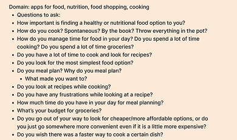
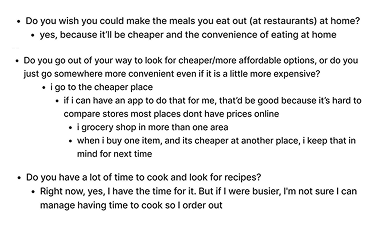
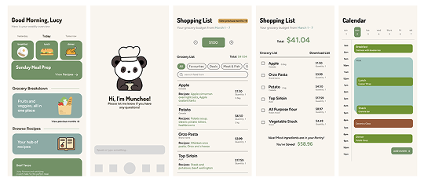
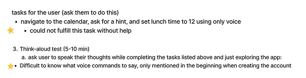
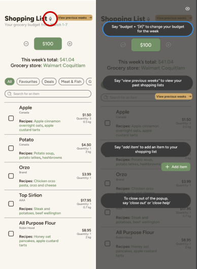

This project was created for an upper-level SIAT course to be completed in a group of three. We were tasked with designing an interactive voice-based app. Our team developed app. We explored multiple problem spaces in the ideation phase before choosing food planning because of its wide appeal and user need. However, we still needed to narrow the problem space. We decided to create an app to cater towards students to help with meal planning, grocery shopping, and recipe customization based on individual health goals and dietary needs. But most importantly for the tight-money and lack of time student, where it finds this app finds the cheapest ingredients and creates simple but tasty recipes with everything. Personally, I contributed to user interviews, low-fidelity wireframes, and led the visual interface design using Figma. I also coordinated usability testing and documented user feedback to inform our iterations.


We first started by brainstorming problems and ended up combining an idea that is closely relatable to us. In the first figure, I have come up with questions to interview willing students around SFU campus about their thoughts on food planning, time-managment and more. In second figure, I took a snippet of some answers the students' answers where we noticed the students had difficulty budgeting, and had no time. Their goals were to save money, and stay healthy, which then led us to create our Persona, "A Broke University Student With No Time"

In the design phase, seen in the figure above, I kept the interface simple and intuitive. Inspired by Mary Blair’s playful yet clear visual style, I used bold, contrasting colours to make key elements stand out. With many features included, a clean layout helped us avoid clutter and keep the user experience smooth and approachable.

In the figure above, we conducted a user testing for the progress we made and made them answer question during and after testing our app. We learned what we thought would be intuitive were confusing to some users. The were unsure how to use certain functions, which led to confusion and from the testing gained insight to make our app better. There was an absence of clear instructions that left them uncertain about how to navigate the app effectively and use the helpful functions we created. This feedback highlighted the need for a more detailed onboarding process and better guidance throughout the app. So we ensure users fully understand its features and can use them with ease instead of annoyance or confusion. We did come across challenges where we did the user testing more than a couple times. It was difficult to highlight important functions because our app had many functions that could overload users cognitive mind. Which leads to the next section, our soluction.

For our solution, we added an help features that would be located at the same spot on every main page. The can call our "help munchie" and would provide instruction for the users. In the next user testing, this has helped users to have a better experience during onboarding and while using the app. In the figure above, this is what the help feature looks on the shopping list page. Overall, this guide will be made available to users at all times, allowing them to not feel confused while navigating their way through the app through voice.
This project taught me for clear user guidance and simplicity in design. I learned how critical it is to provide users with clear onboarding instructions. I also learned a lot about balancing functionality so it would not overwhelm the user. I value user testing, from their feedback and spotting concerns and problems, designers do not always notice and can miss. However, hearing about the problems makes me want to do better and make the adjustments or can maybe scratch the idea and try a different appraoch. Overall, this project reinforced how important the user-centered design approach is when creating an intuitive and effective product. This project challenged me to think critically about accessibility, clear understanding and designing in a voice-first interface. Technology can reduce or increase cognitive load, so it's important to continously have user testing. Like I've learned, design is not linear but a circular process.